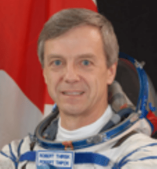
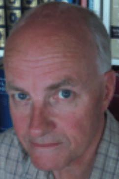
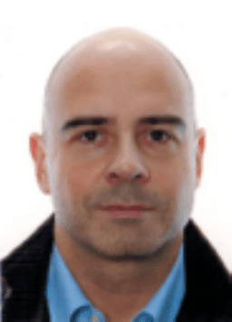
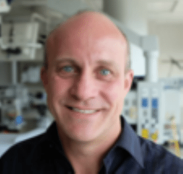
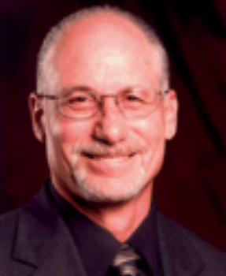
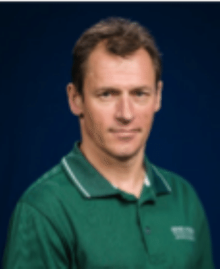

Sunday Symposium

Sunday Symposium
The topic of this year's symposium will be Cardiology and Space Flight, where six exciting talks by renowned experts in the field will look at the heart and cardiovascular system in the space environment. The tentative program will be as follows:

Dr. Robert (Bob) Thirsk was born and raised in western Canada. He received degrees in Mechanical Engineering from the University of Calgary and from the Massachusetts Institute of Technology (MIT). He also holds a Doctorate of Medicine from McGill University, and a Master of Business Administration from the MIT Sloan School of Management. Bob has flown on two space missions as a member of the Canadian Space Agency’s astronaut corps. He first flew aboard the space shuttle Columbia in 1996 with six international crewmates as part of the Life and Microgravity Spacelab Mission. This 17-day mission was devoted to the study of life and materials sciences. In 2009 Bob launched aboard a Russian Soyuz spacecraft to the International Space Station (ISS). As members of the ISS Expedition 20/21 crew, Bob and his five crewmates performed multidisciplinary research which will bring terrestrial benefit and enable future space exploration. During the 188-day expedition, the Expedition 20/21 crew also performed robotic operations and maintenance of Station systems and payloads. Bob is a strong promoter of an economy based upon exploration and innovation. He encourages Canadians to build their career dreams upon a solid educational foundation and advanced skills. He currently serves as Chancellor of the University of Calgary.

Dr. Peter Norsk (b. 06/14/1953, Copenhagen, Denmark) became an M.D. in 1982 at the University of Copenhagen and there earned his Doctor of Medical Sciences degree (dr. med.) in 1989. He received his basic clinical training in the period from 1982 to 1989 at the Hospital of Hoersholm in Denmark and in the Royal Danish Air Force. He obtained a European Space Agency fellowship grant working with the water immersion model for simulation of weightlessness in humans at the University of Miami in the laboratory of professor Murray Epstein (1986–87). From 1988 to 2002, he was the general manager of the Danish Aerospace Medical Center of Research at the Copenhagen University Hospital and thereafter until 2011 Professor in Gravitational and Space Physiology at the Department of Biomedical Sciences, University of Copenhagen. His research has focused on how the human cardiovascular system and sodium and fluid volume regulating mechanisms are affected by changes in gravity, and he has been responsible for some ten inflight experiments with astronauts on the Shuttle, the Mir Space Station and the International Space Station. He has published as a first or co-author about 115 papers in international scientific journals. From January 2011, he has served as a Chief Scientist at USRA (Universities Space Research Association) and an Element Scientist for the Human Health and Countermeasure element (HHC) within the NASA Human Research Program (HRP) at Johnson Space Center.
Dr. Pierre-François Migeotte is the head of the Laboratory of Physics and Physiology (LPHYS) in the cardiology department of the Erasme hospital from the Université Libre de Bruxelles; He received a master degree in physics from Université libre de Bruxelles in 1996, a master in Business Administration from ISC St Louis in 1997 and got his Ph.D. degree in 2003. His doctoral work focused on heart rate variability and adaptation of human physiology to microgravity. His research interests include the adaptation of the cardiovascular and autonomic nervous system to microgravity, artificial gravity, bed-rest, and other extreme environments. He participated to several parabolic flights campaigns and was co-investigator of various projects on human physiology in space and Space analogue environments such as Bed rest and centrifuge studies and the Antarctic Concordia station. Currently his research is focused on the development of a wearable cardiac monitoring system based on Seismo and Ballistocardiography. This technology was developed for the monitoring of Cosmonauts cardiac adaptation for the ongoing ESA-CARDIOVECTOR-3 Experiment that will take place in the international space station from 2017.
Dr. J. Kevin Shoemaker is a Professor of Kinesiology, and a Canada Research Chair in the Integrative Physiology of Exercise and Health. He received his B.A. in 1990 (Wilfrid Laurier University), and did his graduate training at the University of Waterloo in Kinesiology (MSc, 1992, PhD 1996). Following a three year postdoctoral period at Pennsylvania State University, Division of Cardiology, he took up his current position at the University of Western Ontario in 1999. He directs two laboratories at his home institution, and has a growing list of international and interdisciplinary collaborations. Supporting a highly collaborative and interdisciplinary model, and using a variety of techniques that include microneurography, magnetic resonance imaging, and ultrasound imaging modalities, his current research explores i) recruitment strategies in efferent postganglionic sympathetic nerves, ii) cortical neurocircuitry associated with autonomic cardiovascular control (the brain-heart connection), and iii) cerebrovascular control, within the context of exercise, inactivity and brain injury. He currently performs Associated Editorship duties for Frontiers in Autonomic Neuroscience and serves as the current President of the International Society for Autonomic Neuroscience.

Dr. Victor (Vic) Convertino is Senior Scientist at the U.S. Army Institute of Surgical Research at Fort Sam Houston, Texas. He received baccalaureate degrees in Mathematics and Physical Education at the California State University at San Jose, a Master’s degree in Exercise Science and a Ph.D. degree in Physiology at the University of California at Davis. His professional career has taken him to positions at NASA’s Ames Research Center, the Stanford University School of Medicine, the University of Arizona, NASA's Kennedy Space Center, and the U.S. Air Force Research Laboratory before his current position. Dr. Convertino holds adjunct professor positions at several universities and the US Air Force School of Aerospace Medicine. Dr. Convertino is a contributor to many areas of research including: regulation of plasma volume during acute and chronic exercise; interrelationship of plasma volume and electrolytes with adaptation to microgravity and thermoregulation during heat and exercise exposures; effect of acute and chronic exercise on blood pressure regulation and orthostatic competence; development of exercise training and countermeasures for astronauts and crew members of high-performance aircraft; and physiological adaptation to varying gravity environments. Perhaps his most important work is his current research designed to develop decision-support algorithms, therapeutic devices, and new Tactical Combat Casualty Care doctrine to advance the capabilities of combat medics to save lives of battlefield casualties. Dr. Convertino has successfully collaborated with nationally and internationally recognized scientists from more than 25 different laboratories. He has published over 300 peer-reviewed manuscripts, invited reviews, and chapters in the scientific literature. He has delivered more than 80 scientific papers at professional meetings and 200 invited presentations and lectures to medical, scientific, and lay groups in 34 states and 23 countries.

Dr. Erik Seedhouse works as an assistant professor in Commercial Space Operations at Embry-Riddle Aeronautical University, Daytona Beach. He is also the Manager of the suborbital spaceflight simulator and astronaut instructor for Project PoSSUM. Erik received a master’s degree in Medical Science from Sheffield University in 1991 and his PhD from Sheffield University in 1999 with work conducted at the German Aerospace Center (DLR) Institute of Space Medicine. Between 2008 and 2013 he was director of Canada’s manned centrifuge operations and managed the hypobaric facility at DRDC Toronto. He is a Fellow of the British Interplanetary Society and a member of the Space Medical Association. In 2009 he was one of the final 30 candidates in the Canadian Space Agency’s Astronaut Recruitment Campaign. Erik is the Editor-in-Chief for the Handbook of Life Support Systems for Spacecraft and a published author, with more than 20 books to his name. When not training commercial astronauts and enjoying the sun on the Space Coast he can be found on the Big Island of Hawaii or in Sandefjord, Norway.